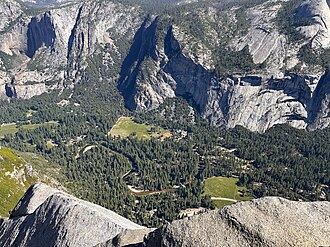
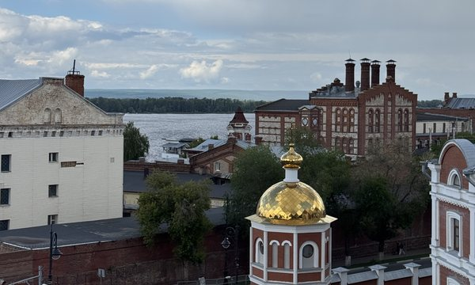
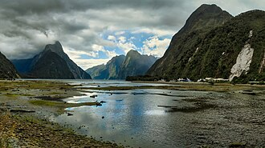

Загружайте фотографии
Weatherpins определяет место и время съёмки по EXIF-данным фотографии. Если данных нет или они неточны, их можно указать вручную.
Ваши воспоминания — на карте
Weatherpins — личный фотодневник на карте. Сохраняйте места и моменты, к которым хочется возвращаться, и узнавайте, какой была погода во время съёмки.
Открыть Weatherpins
Йосемити · США

Самара, Россия

Милфорд-Саунд · Новая Зеландия
Weatherpins определяет место и время съёмки по EXIF-данным фотографии. Если данных нет или они неточны, их можно указать вручную.
Ваши снимки появляются на интерактивной карте мира. Исследуйте места своих путешествий и возвращайтесь к любимым воспоминаниям.
Weatherpins дополняет фотографии архивными погодными данными: температурой, осадками и другими условиями, когда эти сведения доступны.